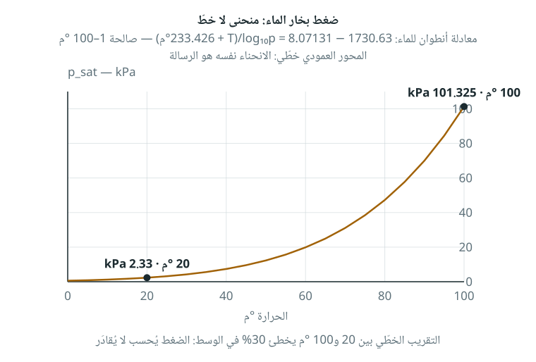

ضغط البخار
Vapor pressure
ضغط البخار هو الضغط الذي يحدثه بخار مادة في توازن ترموديناميكي مع طورها المكثّف عند حرارة معيّنة. للماء عند 0.01 °C هو 0.61165 kPa، ويبلغ 101.325 kPa عند 100 °C وهي نقطة الغليان عند الضغط الجوي. وهو خاصية للمادة تعتمد على الحرارة وحدها لا على حجم الحيّز.
عندما يتبخر سائل في حيّز مغلق يزداد عدد جزيئات البخار حتى يتساوى معدل الخروج من السطح مع معدل العودة إليه، وعندها يستقر الضغط عند قيمة هي ضغط البخار المشبع. وإذا كان الضغط الخارجي أقل من ضغط البخار يغلي السائل، وإذا كان أعلى يبقى سائلاً. ولهذا يغلي الماء عند 100 °C على سطح البحر وعند نحو 71 °C على قمة إيفرست. مثال: الماء عند 0.01 °C له ضغط بخار 0.61165 kPa، وهذه هي النقطة الثلاثية للماء التي تُعرَّف بها الكلفن.
كيف تعمل الظاهرة؟
جزيئات السائل في حركة حرارية مستمرة، وبعضها يملك طاقة كافية للتغلب على قوى التجاذب بين الجزيئات والخروج إلى الفراغ فوق السطح. وفي الحيّز المغلق تعود بعض جزيئات البخار إلى السائل فتتكثّف. ويستقر النظام عندما يتساوى المعدلان، وعندها يكون البخار مشبعاً وضغطه هو ضغط البخار المشبع. وكلما زادت الحرارة زاد عدد الجزيئات القادرة على الخروج، فيزيد الضغط المشبع زيادة أسّية. وهذا ما تصفه معادلة كلاوزيوس-كلابيرون التي تربط الضغط بحرارة التبخر.
العلاقة بالأرقام
ln(p₂/p₁) = −(ΔH_vap/R)·(1/T₂ − 1/T₁). وللماء ΔH_vap = 40.65 kJ/mol، وR = 8.314 J/(mol·K). من 20 °C (293.15 K) إلى 100 °C (373.15 K): ln(p₂/p₁) = −(40650/8.314)(1/373.15 − 1/293.15) = −4889.3×(−7.316×10⁻⁴) = 3.577، فـp₂/p₁ = 35.8، ومنه p₂ = 2.339×35.8 = 83.7 kPa، وهو قريب من 101.325 kPa المقيسة، والفرق لأن ΔH_vap نفسها تعتمد على الحرارة.
مفاهيم متقاربة
يُفرَّق بين ضغط البخار والضغط الجزئي: الأول حدّ التوازن عند حرارة معيّنة، والثاني ما هو موجود فعلاً وقد يكون أقل. ويُفرَّق بين ضغط البخار والرطوبة النسبية: الأولى بوحدة ضغط والثانية نسبة مئوية. ويُفرَّق بين ضغط البخار ونقطة الغليان: الأولى خاصية تُقاس، والثانية الحرارة التي يتساوى عندها ضغط البخار مع الضغط المحيط. وأخيراً يُفرَّق بين ضغط البخار لمادة نقية وضغط البخار الجزئي لمكوّن في محلول، حيث يخفضه قانون راؤول.
حدود التطبيق
ضغط البخار لا يصف السوائل فوق حرارتها الحرجة حيث لا يوجد تمييز بين السائل والغاز. ولا يصف المحاليل بلا تصحيح نشاط، حيث يخفض المذاب ضغط البخار. ولا يصف السوائل عالية اللزوجة قرب التجمد حيث تصبح حركية الاقتراب من التوازن بطيئة جداً. ولا يصف الأنظمة التي لا تصل إلى التوازن كالتبخر في تيار هواء متجدد. وأخيراً لا يصف ضغط البخار في المسام النانوية حيث يعدّل الانحناء الضغطَ بحسب معادلة كلفن.

| الكمية | القيمة | المصدر |
|---|---|---|
| ضغط بخار الماء عند 0.01 °C | 0.61165 kPa | [1] |
| ضغط بخار الماء عند 20 °C | 2.339 kPa | [1] |
| ضغط بخار الماء عند 100 °C | 101.325 kPa | [1] |
المصادر
- 1 Water Vapor Saturation Pressure: Data, Tables & Calculator — The Engineering ToolBox (2026). www.engineeringtoolbox.com/water-vapor-saturation-pressure-d_599.html · اطُّلع عليه 2026-11-22
- 2 CODATA Value: Boltzmann constant — NIST — CODATA 2022 recommended values (2024). physics.nist.gov/cgi-bin/cuu/Value?k · اطُّلع عليه 2026-11-22
استشهد بهذا المصطلح
الصيغتان مبنيتان من بيانات الصفحة نفسها: العنوان والتاريخ ورابط النسخة المنشورة.
ضغط البخار — Vapor pressure. (2026). ديوان المعرفة — انفراد. https://infiradev.com/diwan/terms/term-vapor-pressure.html
@misc{term-vapor-pressure2026,
title = {ضغط البخار},
titleaddon = {Vapor pressure},
howpublished = {{ديوان المعرفة — انفراد} — مرجع علمي عربي},
year = {2026},
url = {https://infiradev.com/diwan/terms/term-vapor-pressure.html},
urldate = {2026-11-22},
note = {مراجعة علمية: تحرير انفراد الآلي — نُشر بأمر عبدالله الهويدي}
}
راجعه: تحرير انفراد الآلي — نُشر بأمر عبدالله الهويدي · 2026-11-22 · آخر تحديث 2026-11-22